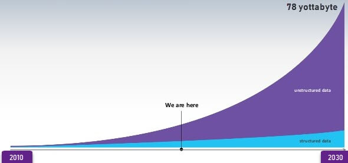

Examples Of Big Data
links
Following are some the examples of Big Data-
The New York Stock Exchange generates about one terabyte of new trade data per day.

Social Media
The statistic shows that 500+terabytes of new data get ingested into the databases of social media site Facebook, every day.
This data is mainly generated in terms of photo and video uploads, message exchanges, putting comments etc.
A single Jet engine can generate 10+terabytes of data in 30 minutes of flight time. With many thousand flights per day, generation of data
reaches up to many Petabytes.
